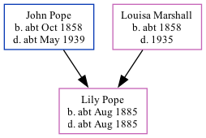

Lily Louisa Pope cAug 1885 - c1885
[ Home ] | [ Calendar ] | [ Surnames Index ] | [ Family History ]The child of John Pope (a bricklayer) and Louisa MarshallLily Pope, the third cousin twice-removed on the father's side of Nigel Horne, was born in Brentford, London, England c. Aug 18851.
She died c. Aug 1885 in Brentford2 and was buried at St Nicholas, Chiswick, London, England on Aug 8, 18853.
Parents
- John Isaac was born c. Oct 1858
- Louisa was born c. 1858
Citations
- England & Wales births 1837-2006 - Findmypast
- England & Wales deaths 1837-2007 - Findmypast
- Greater London Burial Index - Findmypast
Media
England & Wales births 1837-2006 - BMD/B/1885/3/AZ/000444/140
England & Wales deaths 1837-2007 - BMD/D/1885/3/AZ/000248/105
Greater London Burial Index - GBPRS/D/963135546/1
Family Tree
Generated by ged2site. Last updated on Nov 13, 2024